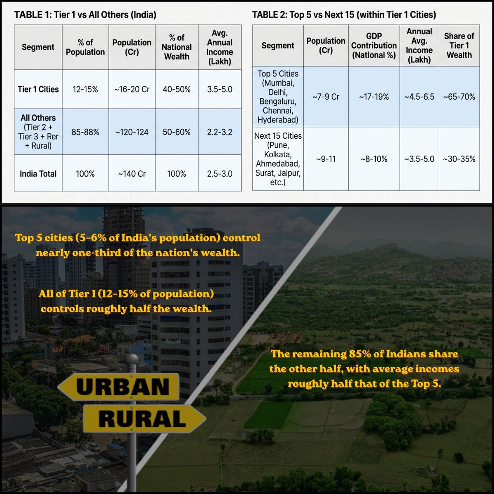
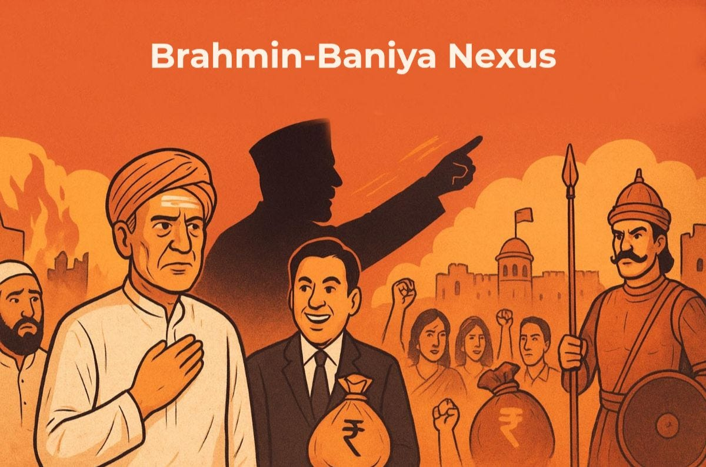
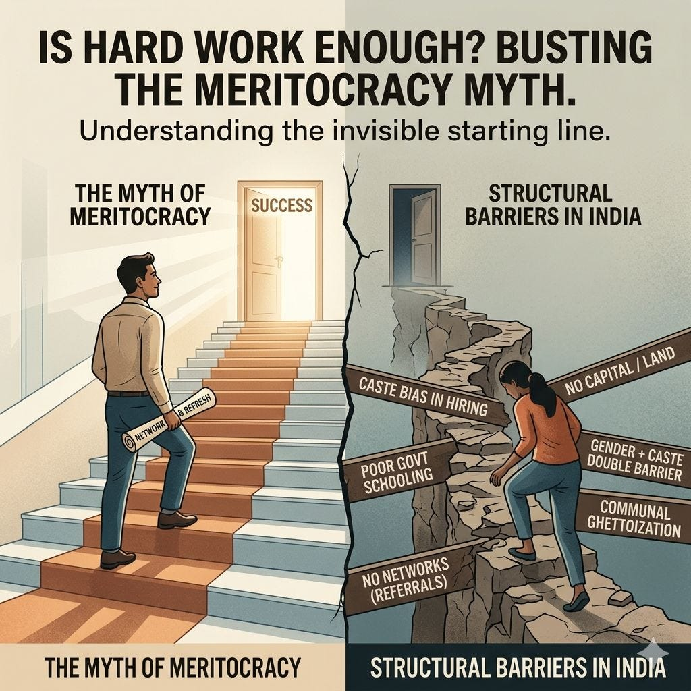

4. Structural Inequality in India
Weath Distribution in India (Part 1)

Just 5–6% of India’s population controls nearly one-third of the nation’s wealth.
Let me explain what the numbers actually say.
India has about 140 crore people.
Of these, only 12–15% live in Tier 1 cities (places like Mumbai, Delhi, Bengaluru, Chennai, Hyderabad, Pune, Kolkata, Ahmedabad, etc.).
But that small group controls roughly 45% of the nation's total wealth.
Now look inside Tier 1 cities:
The top 5 cities (Mumbai, Delhi, Bengaluru, Chennai, Hyderabad) have a population similar to the next 15 Tier 1 cities combined - roughly 7–9 crore vs 9–11 crore.
Yet the top 5 contribute nearly double the GDP (17–19% of national GDP vs 8–10%) and hold 65–70% of all Tier 1 wealth.
Zoom out to the national level:
The top 5 cities alone - just 5–6% of India's population - control nearly one-third of the country's wealth.
What about the rest?
The remaining 85–88% of Indians - living in Tier 2, Tier 3, and rural areas - share the other half of the wealth. Their average annual income is about ₹2.2–3.2 lakh, roughly half of what someone in a top metro earns (₹4.5–6.5 lakh).
Conclusion -
We are not spreading wealth across India. We are stacking it in a handful of postal codes.
📊 Sources: Census of India, SECC, Hurun India Wealth Report 2025, Home Credit India study, JRC EU data.
IMPORTANT COMMENTARY:-
- Krishna - Yeah, they might be controlling so much more but don't consume that much themselves, they take care of wealth, use it to produce goods and services, spend sleepless nights, pay taxes etc. All this in legal manner. So they shouldn't be despised rather praised. The cheater among them should be caught and punished.
- Sajal - The post isn't against wealthy people ... it's about a system where wealth stays concentrated in a few cities .. leaving most of India out
- Krishna - Its economic principles at work not a created system.
- Sajal - But policies, infrastructure spending, and where jobs go are created by us ... We can choose to invest more in Tier 2 cities to balance it
- Krishna - Yes, that's right, the infrastructure related must go to where it is most needed, diverting by any other logic will be a bad idea. And if it is assessed that Tier 2 need it more then it should go there.
- Nimi - At this point it’s not even inequality. it’s exclusion. When 5–6% control such a disproportionate share and the rest are not just behind…. they are locked out of the system itself.
- Sajal - yasss exactly 💯 .. inequality means some have more ... and exclusion means many can't even enter the game
- Abhishek - Tricle down effect which capitalism promised seems to be kicked out 🦵 And same need reforms
- Sajal - True. Wealth is pooling at the top, not trickling down. If we don't invest in smaller cities, this gap will only grow further.
- Yash - Great #cfbr the difference between Tier 1 vs rest of India is VERY BIG
- Sajal - Yes, this gap is crucial to understand .. in order to fix everything from the ground up.
- Shruti - Following in the footsteps of our superpower fran USA
- Sajal - Yes, similar problem. But India's concentration is even sharper. Top 5 cities alone hold one-third of national wealth. That's extreme by any standard.
- Kaushik - Top 5 city list - what's the parameter?
- Sajal - GDP + wealth share .. (see the tables) These 5 cities contribute 17-19% of national GDP and hold most of Tier 1's wealth
Upper Caste Dominance (Part 2)

India's economy is NOT meritocratic
Here's why.
IT / Startups / Finance → Upper-caste Hindus (Brahmins, Baniyas & Kayasths)
Why? Colonial legacy gave them English education first. That turned into urban jobs through social mobility.
Trade / small business → Baniyas, Jains and Marwaris
Why? Generational capital + community credit networks. If your family hasn't been trading for generations, you don't get the loan. Period.
Government jobs → Upper caste + reserved categories
Why? Reservation helps SC/ST/OBC enter. But total jobs are tiny (\~35k annually). Upper castes still dominate the top posts.
Gig economy (Zomato, Uber, Swiggy) → OBCs, SC/ST, Muslims
Why? Low barrier to entry - no degree, no network, no capital. But here's the catch: no security, no growth, no retirement. It's inclusion without dignity.
Informal labor (domestic work, construction, driving) → SC/ST, OBCs, Muslims, especially women
Why? Because formal jobs actively discriminate. When no one else hires you, you take what's left.
Conclusion - Upper castes captured the knowledge economy through early English education (a colonial gift).
Then they used social networks to keep it.
Everyone else got either reservation (too few seats) or informal/gig work (too little security).
IMPORTANT COMMENTARY:-
- Pawan - Leave hiring.. its in every facet of life... When a purchased a flat in a well off area in Delhi, my neighbours asked me that they will prefer a Punjabi person next door. Another told me 'We are "Sarangi" brahmins. What about you?" This is a way how upper caste surnames are "normalised" while whoever doesnt have that surname is shown as "different" or "other".
- Shalini - Painting it all as Upper caste and Lower based on discrimination and capturing is also an Unfair and Lopsided view. It same like all rich are bad, all who were driving big vehicle in an accident are culprit, all men are assaulters, all Muslims are terrorists. Is a long script but very Narrow vision. Protecting Ideologies without deeper understanding is blind following. Just another Extreme. That's what happens when Binary thinking gets Polarized.
- Sajal - No, the enemy isn't upper caste .. I also come from upper caste .. the problem is that we're doing little to nothing to solve issues .. read my earlier posts .. first we abandoned socialism .. reservation has become joke .. it's all ECONOMICS
- Yash - This post is very much nuanced if you read the POST properly. This is based on FACTS and DATA.
- Shalini - Ok, book data doesn't mean nuanced thinking.. No discussion.. I read your post and based on that I responded. May be what you think and what you have written has gaps. Solution come later but the problem itself lacks clarity here. Someone abandons Socialism, someone abandons Capitalism. That's what I said it's two Extremes. Extreme minds cannot find any solution.
- Yash - Socialism isn't extremism, capitalism/communism is extremism. Fabian Socialism means "Key industries must be nationalised appropriately so that we can have Inclusive growth and decentralised economy". Bigger problem is people don't know the difference between Capitalism Socialism Communism ..
- Shalini - 🙏 I am not a book worm. I believe in understanding and Simplify the complexities. So, let's not discuss..
- Sadaqaut - Without being a bookworm, how do you understand and simplify complex ideas? If we avoid discussing something just because we feel we need to educate ourselves in that domain, it is not a sign of improvement, empowerment, or influence—it is ignorance. Isn’t it?
- Shalini - No book can teach how to interpret and understand. That depends on one's own intellect. Or else any Literate can read a book.
- Yash - Brother, this is called invisibilisation of INEQUALITY and APOLITICAL mindset. APOLITICAL in UNEQUAL society generally means siding with the OPPRESSOR.
- Sadaquat - You’re right, but slightly off. Without understanding a subject in both depth and breadth, no intellectually sound person can truly interpret it or understand. That’s why, even to become literate, reading is essential. Because literacy leads to education, education leads to knowledge, knowledge shapes morals, and morals build character and it all helps humans in better decision making. But without Reading nothing is possible. There is no if and buts in it. Isn't it?
- Shalini - Yes I am siding with oppressor. If that helps..Are you the Resurrector ? Whatever you have written also lacks clarity. Its Oversimplification of Complex ideas with no depth. More shallow, more juggling of words. More depth, more clean and clear.
- Sadaqaut - Chill, he is not judging you, ma'am 😅. He was just explaining it to me for further information 🙏 we don't label people. We accept different ideas, opinions, and beliefs
- Shalini - I know him well so dont intervene to defend. This higher than thou attitude you are showing doesn't work for me. I can read people well..Good Day..👍
- Sadaqaut - Honestly, This one makes no sense.
- Shalini - Neither I am labeling. I just reversed the question from oppressor to resurrector. Rather Reformer is the better word. If it doesn't make sense then leave it..😊
- Sadaqaut - Oh, I see. Likewise, why would I defend him? He hasn’t committed any crime. I’m speaking to you with full respect, politeness, and professionalism. I don’t show attitude on LinkedIn, social media, or in real life. My attitude is reserved—only a few can afford it. Its expensive than kohinoor or any kinda tangible or intangible assets/identity. (Not for Everyone) I also understand energy, aura, vibrations, and people. Thanks for wishes, have a great day too ✨. Let me know if we can collaborate in future...!!
- Pawan - You are missing the point. You would only say women get raped by men, for instance. It doesn't mean that all men are rapists. At the same time like women can't rape women, same way dalits can't discriminate against upper caste based emboldened by caste system.
- Shalini - Have I said Dalits can discriminate. That's the issue with Binary thinking. If not This then That, if not That then This. Point is all LC also not underprivileged. May be number is less. That's why Caste Census is important.
- Pawan - By the same standards, speaking against rape is also binary thinking ? Because it is putting only men in the dock ?
- Manoj - I am glad people are talking now. This is the truth of the so called knowledge economy.It's nothing but a gated community. Old caste barriers have not just become more dangerous it has also now taken new forms. Today, if you don't speak English or don't have access to right urban networks, you are locked out of high paying jobs. They have caste sysytem in it & built through colonial access and are still controlled by the same upper castes. Meritocracy is a joke for many. You work hard, you get a degree but you still don't get in because you don't have the right connections & if you do get something, it is usually in the gig economy with no respect or security. As long as your caste decides your access to economic opportunities, the system will never share power and resources with the oppressed.
- Yash - Unfortunate reality nobody wants to admit.
- Shailesh - That's true , The dominance of few 5-10% has been always there and earlier varna systems well supporting till now in almost every field , to discontnue this age old system constitution was created and adopted from which hardly we could see much difference apart from education upliftment but nothing much at top level positions in government institutions or politics or business or trading as the family and the society doesn't support it apart from formal informal jobs , the majority of the population remains out of economic decisions or wealth or participation inclusiveness in government or private sectors , and maybe that's why India remains to be heavily gaped country or economy in the world and hardly there are chances to take country ahead for developed nations , the 40-50% population coming from the majority classes are still under poverty , Without equality the goal of upliftment empowerment and countrys Viksit bharat remains distant and delusional. Insightdul and thoughtful 👍
- Sajal - Yass .. the case for India's backwardness is kinda different as the system is somewhat rigged .. your birth decided majority of your life .. which is deeply disheartening .. thanks for reading :)
- Shalini - Social discrimination is a reality, but to call it Nexus makes it sound like a Mafia gang. That's an extreme interpretation. Like two Groups. Two Extreme sides can't see each other eye to eye . That's not a good sign either. It's another Imbalance. Extremism only leads to Hating the other side. Like men women, Hindu Muslim, so, upper lower.. All hating each other. This is not solution, it fanning the fire.
- Shailesh - Yeah , that's right , but it doesn't change the facts , social imbalance is a stark reality of our country since ages and if it's not going towards equality yet only means , nobody wants to change the rotten varna system which his highly controlled by upper classes , and also it becomes the responsibility of the people at the top notches to create a balanced society that intention seems missing even after having constitution at place.
- Shalini - We all know there is imbalance but calling it Nexus is pulling every upper caste into it as if they all have agenda.To correct something you need to be Fair at every level. Same like just becoz someone is born to a powerful family gets stigmatized to be Nepo kid. Any kind of Stigma is a Discrimination. Without balanced thinking you only sow seeds of hatred. Socialism and Capitalism.. If extreme cannot lead to progress. Both sides attack with their online army.
- Shailesh - Indeed 👍 Don't go by the words , it's used as equal partners in growth in all sectors at all levels while completely sidelining weaker sections of the society , Only focus on equality can change everything for our country that's completely missing.
- Shalini - Like RG says, I am not against Capitalism, I am against Crony Capitalism. Ratan Tata was called Compassionate Capitalist. That's being nuanced. But these people only look at it as B & W. It's All or None mindset. All Capitalists are bad, all Socialists are God. They themselves lack Equality. A See Saw where one side goes up and another down. Neither have patience to pause and think
- Shailesh - That's where one should follow RG's thought process and style of working which closely relates to the constituional values and our old legendary leaders with modernised texture which is quite wise for equal harmonious and inclusive growth , as also seen in southern states , which the extremists don't like it.
- Shalini - That's ok, but am not talking about RG here. I am talking about the Extreme Socialists.. Extremism is not a label given to a particular group. It's a Fixated Ideology to the extent of Blindness. It could be Communism, Marxism, Capitalism.. Fixation on any One Ideology leads to Imbalance. That's not Equality. It's like Feminism doesn't mean Anti Men. That's not equality. Socialism doesn't mean Anti Rich. Lower casteism doesn't mean Anti Upper caste.
- Anjali - “This is a compelling thread, but it compresses a very complex political economy into neat boxes. Historical access to education (especially post-Macaulay’s Minute on Education) and social capital clearly shaped early advantages...no disagreement there. But present-day outcomes are also being reshaped by state policy (like Mandal Commission recommendations), market expansion, and digital access, which are creating new mobility pathways beyond traditional caste networks. Also, sectors like startups and gig work are far more heterogeneous than portrayed...there’s both exclusion and entry happening simultaneously. The real question isn’t whether meritocracy exists or not, but how unevenly opportunity is distributed, and how fast that distribution is changing. A more useful lens might be: intersection of caste, class, geography, and education rather than a static caste → sector mapping.”
- Sadaqaut - You guys really write insightful articles, unbiased, truth and without any narrative or propaganda. Keep rocking man. Satyamev Jayate 🇮🇳.
- Arun - Yet the angst and cribbing on reservations. Is it just about being cry-babies?
- Sajal - Haha exactly ... the same Brahmin-Baniya nexus that got english education, networks, and capital for generations .. cries over reservation ... But look at the data - reservation covers a tiny fraction of jobs (\~35k government posts) and some manufacturing the entire knowledge economy .. IT, finance, startups, trade .. remains in the hands of upper caste
- Ashish - Even the USA — the ultimate meritocracy poster child — has had affirmative action for decades in education & jobs to address historical disadvantages from slavery, segregation, and systemic barriers. It aims to expand the talent pool where networks, legacy, and generational wealth created uneven starts. Studies show it increased diversity and mobility without collapsing standards. Interestingly, the same diversity logic helps many Indian students get admitted to US universities — selected for geographic mix even as they demand pure meritocracy back home. India’s reservations serve a parallel purpose for SC/ST/OBC groups facing centuries of caste exclusion. Gig jobs (Zomato, Uber etc.) have low entry barriers, yet education/network/capital gaps leave many behind. Temporary targeted support makes sense — the real issue is better implementation: creamy layer exclusion, time limits, economic criteria, and fixing primary education. Even the USA has affirmative action for decades to address historical disadvantages and boost diversity. Yet the real hypocrisy: The same Indian voices screaming ‘pure meritocracy’ and opposing reservations back home happily benefit from US universities’ holistic admissions. These schools actively recruit international students from India for geographic/experiential diversity — lowering the bar compared to domestic applicants just to maintain the mix. If diversity considerations are valid there, why the outrage when India applies a similar logic for SC/ST/OBC groups facing centuries of caste exclusion?
- Yash - Thanks #cfbr people almost never read the economic HISTORY of India that's why they believe that Urban India has EQUAL opportunities for all CASTES and religion. They don't even know the population distribution of TOP 5 to top 20 cities and yet they talk about HARD WORK MERIT etc.
- Sajal - Agreed! It's quite surprising to see people making such comments when one having a massive headstart while the other starts from negative ... socialism didn't die in isolation .. aside from economic hardships .. we first have to address inclusivity and opportunities for all.
- Prathmesh - Lots of sympathy...
- Praveen - 67% of delivery boys are from upper caste. Social breakdown of informal and gig occupations shows varying numbers in different studies with diverging conclusions.
- Yash - yes, total upper caste population is 22 crore and general category as a whole is 40 crore and only 4.5 crore people actually paid the Income TAX (2024). In IT Colonialism of Narayan Murthy, upper caste were the major victim of Labour Laws exploitation (Why everyone is excutive/manager, will cover that in future) but upper caste never bother to read labour law .. Stratification is very real, it's like High paying job : 90% upper caste Medium paying : 70% upper caste Low paying : 40% upper caste Labour : 20% upper caste First thing is acknowledgement, if people don't even acknowledge the existence of the problem How exactly a solution can be formulated?
- Manjit - Great insight 💯 Whether we have any degree, we will be filtered by any method. There is new way of discrimination they found is merit based discrimination
- Romit - You are generalising this. It's not completely true: This argument mistakes historical advantage for permanent monopoly. Yes, caste and networks still influence opportunity, but India’s post-1991 economy has created massive social mobility through reservations, mass education, digital access, fintech lending, and skill-based hiring. Lakhs of first-generation professionals from OBC, SC/ST, and Tier 2/3 backgrounds now work in IT, startups, government, media, and entrepreneurship. India is unequal, but calling its economy a “closed upper-caste cartel” ignores the enormous mobility of the last three decades.
- Yash - that's BS post 1991 is the worst Era in terms of INEQUALITY, please check basic economics book. With massive PRIVATISATION of key sectors, Capitalism, we destroyed the reservation. Try to read economics book NCERT
- Sajal - No .. on the contrary .. it led to more problems .. we abandoned socialism and privatized key infra ..
- Ramesh - Your narrative would be stronger if you come up with reasoning like upper caste candidates were of lower level in knowledge and wisdom than reserved candidates at equivalent roles. Without that your claim that every upper cast person has got a job because of caste favour just lacks merit of discussion.
- Yash - why you never posted about this issue with nuances, how exactly Invisibilisation of INEQUALITY is not CASTE HATRED?
- Somashekar - If top jobs are occupied by Upper caste candidates, then what is the use of reservation for lower caste people given by government. Why governments since 1947, couldn't bring the lower caste people to highest level ? Why didn't the governments since 1947 not made reservations candidates to be more competitive? If reservation is increased, will it improve the competency? Why we are still talking upper and lower class, why can't parties make them one ? Just think, why Nelson Mandela of South Africa didn't follow reservation system like us for black people?
- Sajal - CASTE PRIDE = CASTE HATRED First we've to bring social reforms .. otherwise economic reforms will not fructify .. because discrimination form new shapes in different environments Secondly, Mandela did face criticism and his work majorly benefitted only black elites + black population was much larger .. so they had more bargaining power .. unlike our case
- Vinod - Upper cast ko pata hi Bina Education liye kuch nhi ho sakta bhale hi wo gareeb swarn je kyun na ho Nahi to 70 saal reservations lekar bhi admi aaj bheek hi maang raha hi
- Yash - sahi baat hai islee lower caste ko education lene me baadha banta hai UGC regulations implement nahi karne deta 🤡
- Purna - With the globalization and AI ages still we talking about this. This is the real problem.
- Yash - CASTE bias exists even in AI, try to ask GPT give me 30 random full name of Indians and you'll be flooded with upper caste surname.
- Jyoti - Well Narrative
Structural Barriers in India (Part 3)

"Just work hard and you'll succeed."
Sounds nice. But it ignores reality.
If you're born in Tier 2/3 or rural India as Lower caste / class / Muslim / a woman (or multiple), the system is stacked against you before you write your first exam.
Here’s how structural barriers actually work:
👉 Caste bias in hiring – Your surname tells your caste. No complaint mechanism exists. In urban centers, INVISIBILISATION of inequality exists.
👉 No capital, no land – Can't start a business. Can't afford to move to a city for jobs.
👉 Poor government schooling – Private education is expensive. No coaching for competitive exams.
👉 Gender + caste double barrier – Women can't leave home for work. No family support for education.
👉 Communal ghettoization – More than 75% Muslims live in under-resourced conditions. + Religious discrimination
👉 No networks – \~90% of Tier 1 jobs come through referrals. If your circle has no one in IT/finance, you don't enter.
Meritocracy is a myth when the starting line is invisible to half the country.
IMPORTANT COMMENTARY:-
- Shalini - If there are 10 seats, then even if there is competition among 1000 Upper Caste candidates, then also only 10 would get selected. That's Merit. No name, identity, title, money, would help .
- Sajal - And what upper caste can access that competition depends ... like not all upper castes can afford coaching institutes and living far away ... secondly .. upper caste females from tier 2/3 can't relocate due to family dynamics ... I've talked about these structural barriers in the post ..
- Shalini - OK, then out of 1000 may be 500 can afford, even then only 10 would get selected. You cannot undermine Merit. Coaching is also not a guarantee of selection or else students would not commit suicide at Kota Factory Plz do watch the webseries it will give you lot of clarity.
- Sajal - Meritocracy is valid as long as everyone's starting from the same line .. if one gets a headstart and the other one struggles to even begin .. then isn't it unjust? That's all I'm saying.
- Shalini - That's an Utopian idea where all start from same line. We dont live in a Homogeneous society, it's Heterogeneous in multiple ways. That's why better to use word Reform or Upliftment. But all Same is not possible. Though a very pious intent.
- Chirag - Totally agree with you! There are so many people in this country who fail to crack the jobs or get the enrollment in good collages, and then they start spouting on social media that Merit is a myth or the system is designed only for the upper class. And what the hell is this upper class? I know a lot of people who lies under SC/ST and they are doing good in their life, all because of the hard work and sacrifices they made. I know a lot of muslim friends who are making crores from their traditional businesses. All the people have the same opportunities in a democratic country, some people break the chains of poverty and some keep crying for freebies. I am not making any comparison between UC and LC here. We don't need to beat each other out to prove one side to be Right. Discrimination is a Reality, I have no doubt. But to call Meritocracy a Myth is also not true. Fixation to any one side becomes a Blind belief. That limits the scope of thinking. No Ideology is all perfect.
- Shalini - That's why Reservation is important with constant reforms. Besides, that make the basic education Affordable. Read about "Alakh Pandey", a school drop out Educationist and Founder of Physics Wallah coaching institute. The webseries "Hello Bachhon" is made on him. He says, Education is a Human Right, not a Luxury. And how he makes coaching Affordable to the poor. And how poor succeed in IIT and NEET. Caste discrimination within the campus is another evil. But they do succeed in entrance. So, Meritocracy is a Myth is not fully correct becoz as per your defined "Upper Caste", even majority from UC dont get selected in interviews or competitive exams either. So, what is the structure to select Upper caste from the Upper caste population.? If no Meritocracy then all should get selected. Isn't it ? Let's not the reduce the Value of Merit. We are anyways Mediocre which could further go down. Meritocracy means Merit. Not Upper or Lower caste.
- Sajal - Multiple factors influence our careers simultaneously .. a person from top tier city .. being upper caste .. and being a male .. reaps the greatest benefit As the factors gets downgraded .. the barriers get real and visible .. A lower caste person in tier 1 city will face problems A, An upper caste person in tier 3 city will face problems B, A woman from rural area will face problems C, A woman from urban area will face problems D, Religious minorities will face problem E, and so on ... So the problems depend on CASTE + CLASS + LOCATION + RELIGION and many factors .. when they overlap .. the problems intensify
- Shalini - Yes there are multiple factors that's why I say it's too complex. It requires deeper research and based on that one can find Solutions. That's why Caste Census is also important. But You can't oversimplify it labeling it Upper and Lower in B & W. All upper are oppressors, all lower are oppressed. Complex issues can't be addressed with Binary thinking.
- Sajal - Yes, I agree. I didn't oversimplify anything .. or labelled anyone as oppressor or oppressed .. I'm just raising societal issues which no one talks about .. All my posts are in linear order ... reading them all will help understand the issue ... after all, we want and need an egalitarian and just society .. Thanks for reading :)
- Shalini - I also read and try to simplify. That's it. But I am not an Idealist to think one day all will be Equal. That would never happen becoz there are hundreds of counter forces which work at the same time. The word Equality itself is a Misnomer.
- Sajal - instead of fighting for perfect equality .. we should fight for fair treatment - like giving more opportunities to those who have less. That way, we respect reality and still work for justice. But here's the problem .. India moved away from true socialism long ago. We started with socialist ideals but over time .. we shifted toward capitalism and privatization. Now, wealth is in fewer hands, and government support for the poor has weakened. Because of this, even achieving equity has become very difficult. So at this point, justice is hard to realize unless we bring back some strong socialist ideas.
- Shalini - Now it's all very fluid ideas. Perfect Equality is a vague term. Reservation was given for fair treatment only. So, I am not against it. But it requires timely Reality check. And, Equity, Justice, Equality are not the same. We often use them as overlapping terms. Labels like Socialism and Capitalism are mental blocks, more important is REALISM.. Yes, economic divide is the issue, that's becoz of Crony Capitalism, not Capitalism itself. Without Capitalism there is no economic growth then leave poor even middle class would have nothing left to eat. You can't be only Socialist or only Capitalist. Yesterday I was listening to Avadh Ojha saying, India is going towards a revolution like France, becoz moment economy collapses people will revolt. If only LPG crisis happens it would be economic shut down. That's why any Ideology to its very extreme doesn't function well.
- Taniya - I think we need a great socialism approach for creating basic start for everyone...
- Sajal - Yes, exactly! India moved away from true socialism long ago. We started with socialist ideals but over time .. we shifted toward capitalism and privatization. Now, wealth is in fewer hands, and government support for the poor has weakened. Because of this, even achieving equity has become very difficult. So at this point, justice is hard to realize unless we bring back some strong socialist ideas.
- Varun - Absolutely health care and education should be provided by govt. This greedy capitalism has forced basic amneties to be availed by money instead. We must call it out loudly.
- Soumo - The barriers are a lot, and it starts from the home first
- Manjit - True!! Let me share with you a story. One of my loveable colleagues does not pick my phone who used to mix toxic substances in my water bottle. You can be targeted in any sense. Be safe ❣️
- Sajal - Thanks for putting out your painful experience .. It takes courage and honesty to openly discuss .. I'm sorry you had to go through such discrimination .. Casteism is a deadly poison and must be eradicated .. 😥
- Niranjan - I strongly agree with you.
- Nimi - This is so true… many of these barriers aren’t visible but they shape who gets ahead and who doesn’t. And…. It’s not just about opportunity, it’s about how people internalise it. When things don’t work out.. they blame themselves… ( the hardest part to face ) without realising the system was never equal to begin with.
- Sajal - Yess, it's unhealthy to blame oneself when the structure is already rigged and biased ... Great point! Thanks for reading :)
- Rajan - Structural barriers are real — but saying “meritocracy is a myth” is a blatant lie. Reservation was meant to uplift the most disadvantaged, yet benefits often concentrate within relatively better-off groups, while the poorest are still left behind. The “creamy layer” exists for a reason, but is not applied thanks to narratives such as these. Also, reducing everything to caste alone ignores how much economic class, schooling quality, and access shape outcomes today. If the goal is equity, we need better targeting and stronger foundations — not one-sided narratives. Reality is more nuanced and gets played to suit vote banks. This is where concern for the society must shine the light on facts rather than peddle leftist narratives.
- Abhishek - Precisely one have to figure out or sometimes make his own way in system itself to rise up but at same time another one is just got straight forward stairs
- Sajal - Yes, that's what structural barriers are. System is kinda rigged for those who doesn't check those boxes at birth.
- Robert - The biggest roadblock in front of an average child in India aspiring to be a 'Viksit' adult is Malnutrition.
- Sajal - Yes, great point sir! Nutritious diet is something not everyone has access to .. and it is one of the leading cause for high child mortality rate ... thanks for the contribution ✨
- Yash - Great #cfbr Mythology of Meritocracy is snatching away people's DIGNITY and yet nobody speak a word
- Shailesh - Socialism ideas policies and reforms can bring equality but it's implementation always seems weak since long long time , as the dominance of few is sidelining this core agendas for equal status to all and they are more engaged in policies and reforms benefitting their class , though constitution has all such features and powers but socialist leadership and team at the centre and states seems to be main hindrance plus the ever mounting corruption. Wonderful read 👍
- Sajal - Yes, exactly! India moved away from true socialism long ago. We started with socialist ideals but over time .. we shifted toward capitalism and privatization. Now, wealth is in fewer hands, and government support for the poor has weakened. Because of this, even achieving equity has become very difficult. So at this point, justice is hard to realize unless we bring back some strong socialist ideas. Thanks for reading :)
- Kshitij - There is a difference between working for yourself and working for others
- Yash - nobody work for self, everyone works for the people, economy, say a segment of people. If DIGNITY depends upon whether you work as owner or shareholder vs employee then it's a horrible thing. People at the bottom need to unite but the religious BIGOTRY is very high, it won't let people unite.
- Kshitij - I was talking about doing once business and doing a job...in business there is no limit,what you work ,that you achieve...in job it performance and success are not so directly related
- Yash - that's wrong economics, there exists limit in business too and entry barrier also a VERY BIG. We'll cover that in future posts .. business is absurdly BIASED entity.